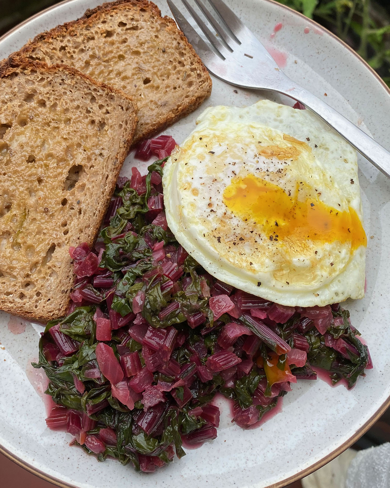

Sautéed Beet Greens
serves 2
approx. 20 mins
Beet greens are possibly one of the most overlooked vegetables. But they happen to be one of my favorite weekend breakfasts. It can be hard to find a bunch of beets with their greens still in-tact at the supermarket, but you may be able to find some at your local farmers market. They cook like other hearty greens (think collard greens, swiss chard, etc.) but release a lovely pink hue, and taste faintly of sweet, earthy beets. I like cooking mine in a simple sweet and sour sauce, and serving with a fried egg for breakfast.
Ingredients
- 1 very large bunch beets, with greens intact and not bruised
- 1/2 onion, preferably red or sweet
- 2 tbsp butter, plus an extra pat for finishing
- 1 tsp red wine vinegar (apple cider vinegar also works)
- 1 tbsp brown sugar
- Salt & Pepper to taste
Preparation
- Trim greens from your bunch of beets. If the stems are tender, you can include them in the dish. Otherwise, save for another use along with the beet bulbs. (I like creating natural dyes with my leftover stems. For the beets themselves, try these Beet Pickled Eggs!)
- Wash greens thoroughly. Theres no need to dry them- the excess water will help the greens steam in the pan.
- Finely chop the onion.
- Set a high-edged skillet over medium heat. Add 2 tbsp butter and the chopped onion. Season with salt and pepper. Cook until tender and beginning to caramelize.
- Meanwhile, roughly chop the washed greens into 1/2in wide strips, and set aside.
- Once the onions have turned golden and the bottom of the pan is beginning to accumulate tasty brown bits, add the chopped beet greens. Add a splash of water, season with a generous pinch of salt, and cover. Steam until tender.
- Once greens are tender, stir in vinegar, sugar, and one more pat of butter. Be sure to scrape up those brown bits from the bottom of the pan when stirring!
- Taste and adjust seasoning as desired. If your greens are particularly bitter, you may need to add more sugar. If you like tangy greens, add a bit more vinegar.
- Serve with a fried egg and a side of toast.